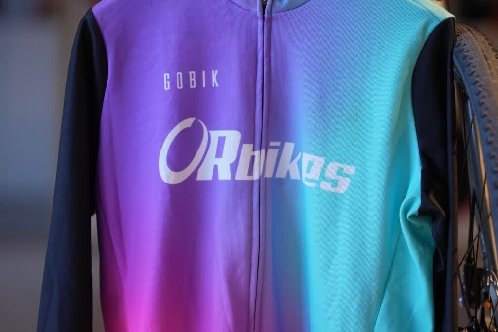
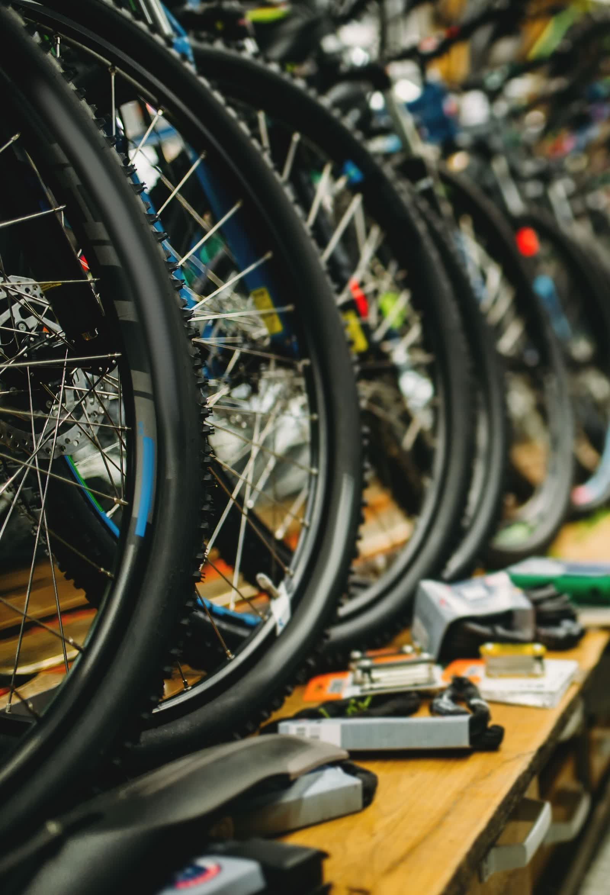
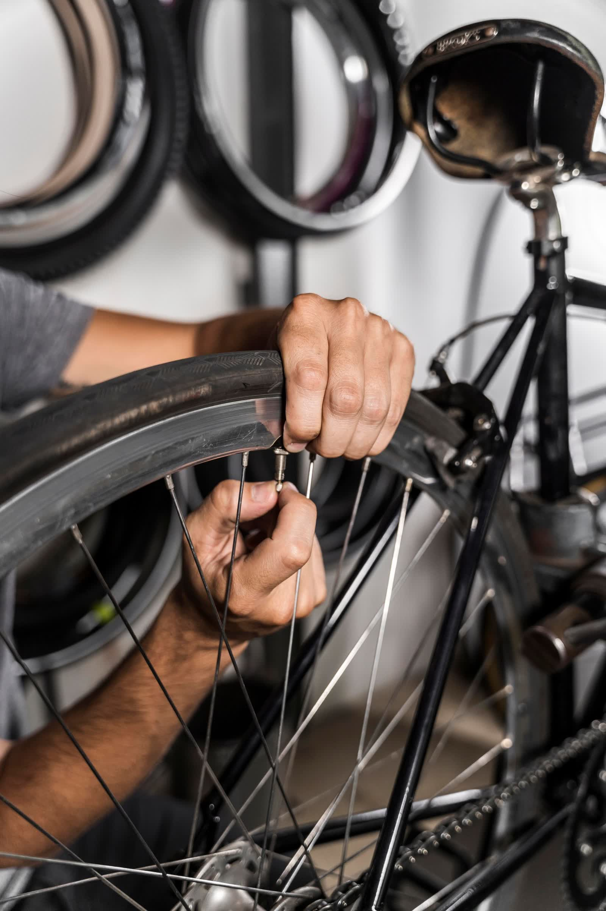

Taller de reparación
Un taller donde la calidad y la rapidez se combinan. Nuestros mecánicos están altamente cualificados y pueden atender todo tipo de reparaciones, desde una puesta a punto hasta una revisión integral de suspensiones.
Ver tallerEl hogar para los amantes de la bicicleta en Santa Bàrbara. Tienda, taller y asesoramiento ciclista profesional.

OR Bikes es una tienda de bicicletas y artículos ciclistas situada en Santa Bàrbara (Tarragona), en el corazón de las Terres de l'Ebre. Un sitio donde la calidad y la rapidez se combinan para ofrecerte la mejor experiencia sobre dos ruedas.
Trabajamos con las marcas más reconocidas del sector y nuestro equipo está en constante formación para estar al día con las últimas novedades en tecnología ciclista.
Un taller donde la calidad y la rapidez se combinan. Nuestros mecánicos están altamente cualificados y pueden atender todo tipo de reparaciones, desde una puesta a punto hasta una revisión integral de suspensiones.
Ver tallerDisponemos de todo tipo de accesorios de ciclismo: desde cascos y ropa especializada hasta componentes de bicicleta y productos de nutrición deportiva.
Ver vestuarioRealizamos estudios biomecánicos para optimizar tu posición, obtener el máximo rendimiento y reducir cualquier tipo de lesión o molestia durante la práctica del ciclismo.
Más información


Visítanos en Santa Bàrbara y déjate asesorar por nuestro equipo. Prueba las bicicletas, conoce nuestro taller y descubre por qué somos la referencia ciclista en las Terres de l'Ebre.